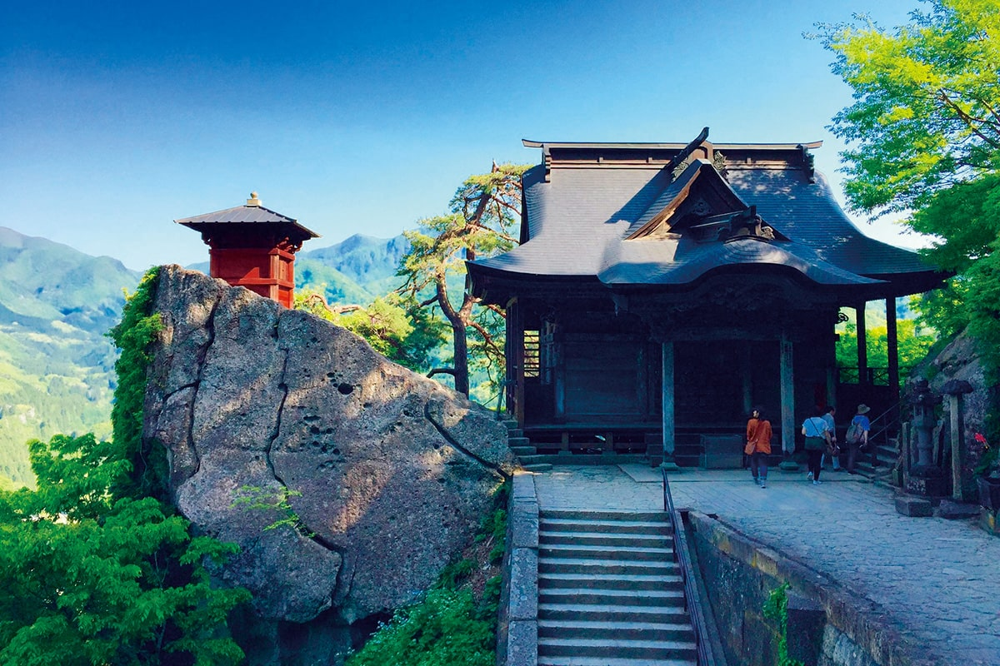
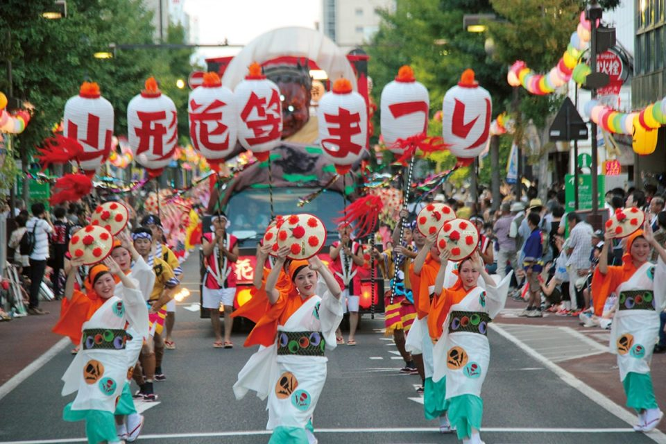
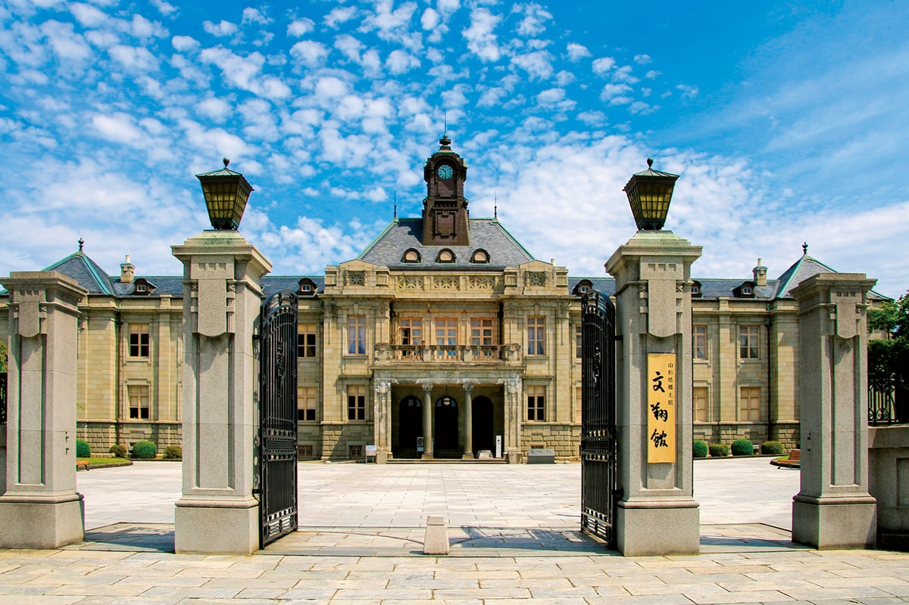
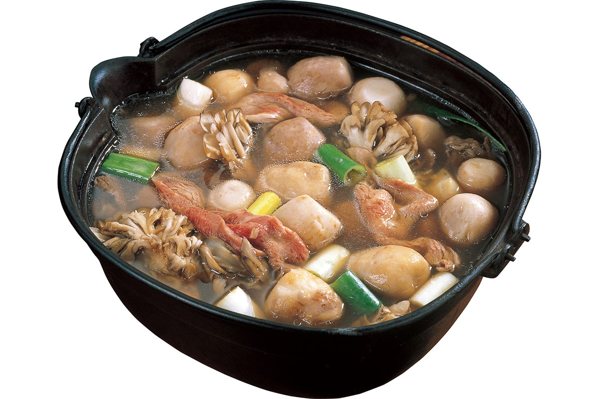
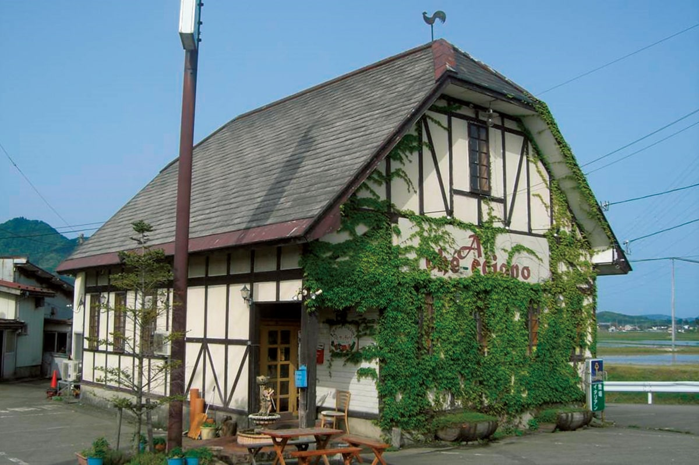
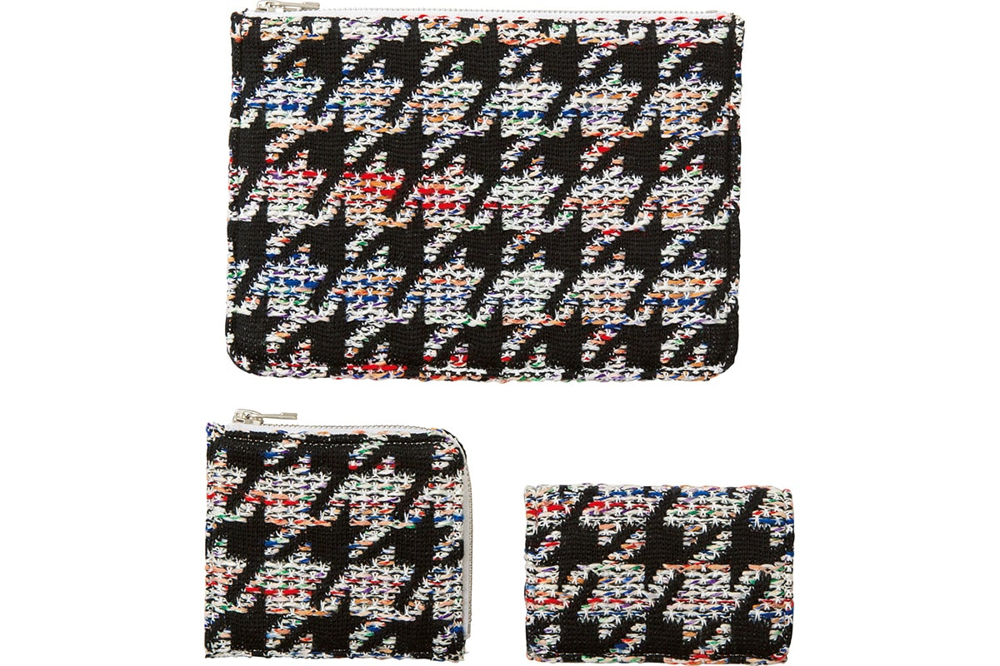
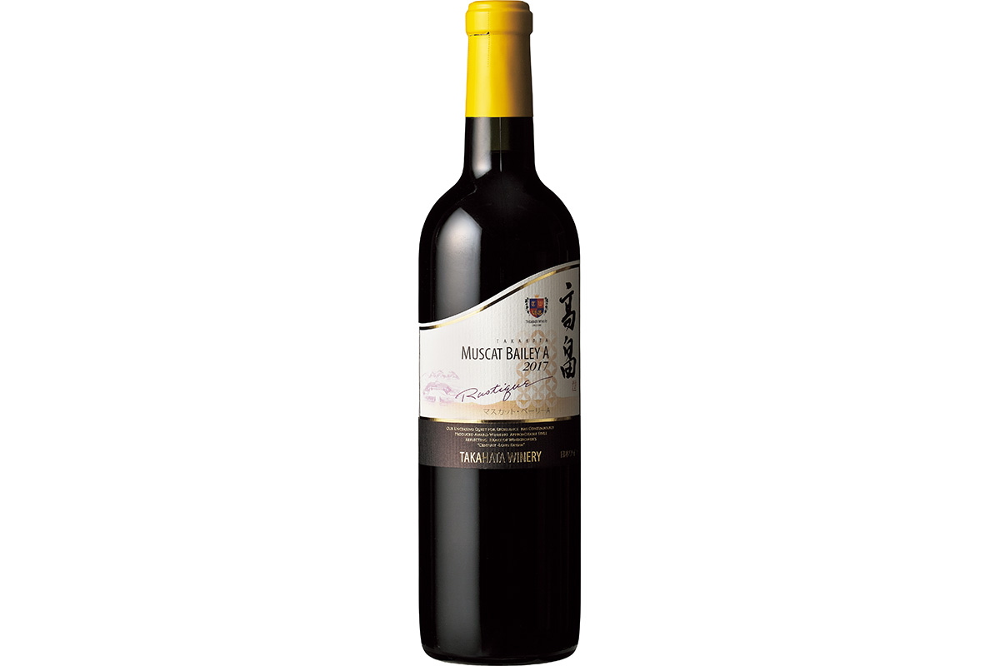
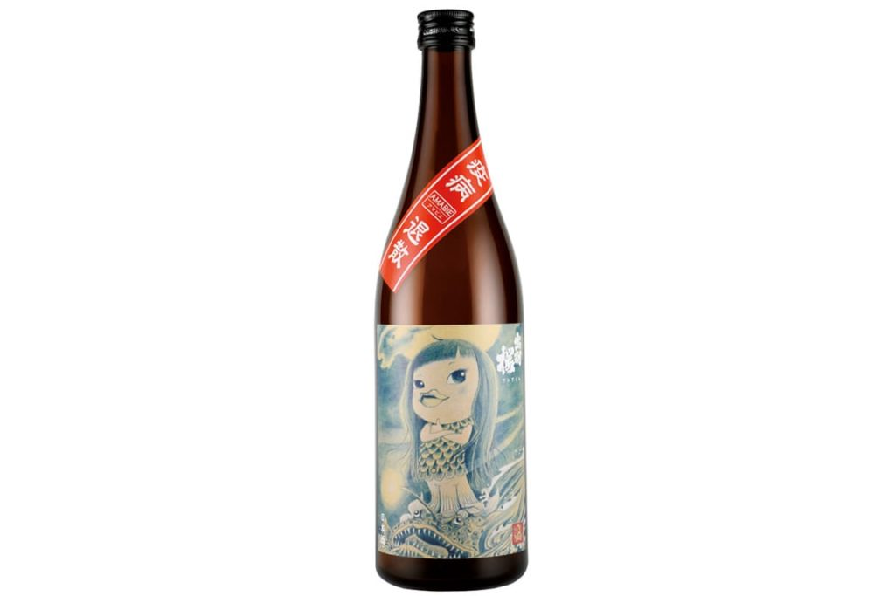

Префектура Ямагата
Ямагата: вишня сатонисики, соломенные шляпы и кипяток в каждой деревне

Два деревянных храма стоят на выступе скалы над долиной, к ним ведёт лестница, кругом поднимаются лесистые склоны.
Здесь на каждой улице есть горячий источник, осенью всей округой варят суп в котле на берегу, а из вишни делают даже розовую пасту. Рассказываем, за чем ехать в Ямагату.
О префектуре
Край гор и сакуры
Около семи десятых всей земли здесь занимают горы, и над краем поднимаются Гассан, Тёкай и Асахи. Имя Ямагата связывают с тем, что местность к югу от нынешнего города называли Ямагата-го. По реке Могами, которая пересекает край с юга на север, лежат плодородные земли, поэтому Ямагату знают как край садов: главный здешний сорт вишни, сатонисики, считается одним из лучших в стране.
В эпоху Тэнсё за землю спорили сразу несколько владетельных домов: Могами, утвердившиеся в Ямагате, Датэ, обосновавшиеся в Ёнэдзаве, и род Муто в Сёнае. После битвы при Сэкигахаре Могами расширил свои владения, а позже, уже после отмены княжеств, здесь появились три префектуры, Окитама, Ямагата и Саката, которые объединили в 1876 году.
С краем тесно связан поэт Мацуо Басё (1644–1694), мастер трёхстрочного хайку: здесь стоит храм Рюссяку-дзи на горе Ямадэра, о котором он написал строки о тишине и голосе цикады, вгрызающемся в камень. Через край идёт и железная дорога, которую зовут линией с горячим паром, а горячие источники бьют во всех без исключения городах, посёлках и деревнях.
Что посмотреть
Лестница к храму на скале
Храм Рюссяку-дзи на горе Ямадэра
Этот храм основали в 860 году, и для всего северо-востока он остаётся главной святой горой. Внутри стоят важные для страны постройки, в том числе главный зал, а между ними поднимается каменная лестница, с верхней точки которой видна вся долина.
- Адрес
- 4456-1 Yamadera, Yamagata, Yamagata
- Телефон
- +81 23-695-2843
Что ещё посмотреть
- Сплав по реке Могами, лодки по течению среди скал
- Пруд Маруикэ, прозрачная вода необычного цвета
- Гора Хагасияма, святая гора с кедровой аллеей
Праздники
Шляпы, украшенные сафлором
Праздник цветочных шляп в Ямагате
Праздник открывают украшенные повозки, а следом по улицам идут большие группы танцоров с возгласом «Яссё, макасё!» и звуком барабанов. Главный предмет здесь, это соломенная шляпа, украшенная цветами сафлора, и все движения танца построены вокруг неё. В 2020 году праздник не проводили, но на следующий год его обещают вернуть.

- Период
- с 5 по 7 августа
- Место
- улицы от Токамати до Бунсёкана в городе Ямагата
Другие праздники
- Театр Курокава, старая храмовая сцена под открытым небом
- Праздник Уэсуги в Ёнэдзаве, шествие в костюмах воинов
- Праздник в Синдзё, шествие с большими куклами
Музеи и архитектура
Кирпичный дом с часами
Краеведческий музей «Бунсёкан»
Это старое здание управы и зал собрания, построенные в 1916 году. Дом сложен из кирпича в духе английского возрождения, с башней и часами над входом, и он объявлен важной культурной ценностью страны.

- Адрес
- 3-4-51 Tabi-machi, Yamagata, Yamagata
- Телефон
- +81 23-635-5500
Что ещё посмотреть
- Святилище Уэсуги, родовая святыня в Ёнэдзаве
- Пятиярусная пагода Хагасияма, старая деревянная башня
- Музей фотографии Домон, собрание японской фотографии
Местная кухня
Котёл на берегу реки
Суп имон-ни
Осенью в Ямагате варят суп в большом котле прямо на берегу реки, и этот обычай зовут собранием вокруг котла. Главное в нём, это мелкий таро; кроме него кладут мясо и овощи, а вкус зависит от места: во внутренних районах варят на говядине с соевым соусом, а в Сёнае берут свинину и мисо.

Что ещё попробовать
- Даси, холодная похлёбка с овощами и тофу
- Суп донгара, уха из тресковых с внутренностями
- Соба из Сёная, местная гречневая лапша
Где поесть
Итальянский дом среди полей
Ресторан «Аль Кетчано»
Этот ресторан одним из первых начал работать в связке с окрестными хозяйствами: овощи без удобрений, органические приправы и вода из подземных слоёв берутся здесь напрямую у местных. Блюда подают наборами, и в них главное не отдельная перемена, а сам вкус продуктов.

- Адрес
- 83 Ichirizuka, Shimoyamazoe, Tsuruoka, Yamagata
- Телефон
- +81 235-78-7230
- Часы
- с 11:30 до 14:00 и с 18:00 до 22:00, последний заказ в 20:30
- Выходные
- понедельник, а также зимой
- Сайт
- alchecciano.com
Ремёсла
Вязаные мелочи из Ёнэдзавы
Мелочи бренда COOHEM
Старая фабрика трикотажа завела собственный бренд: идеи придумывают молодые дизайнеры, а выполняют их мастера с многолетним стажем. Из полотна с плотным узором здесь собирают кошельки, дорожные сумки и чехлы для карточек.

- Справки
- фабрика Yonetomi Seni
- Телефон
- +81 23-664-8166
- Сайт
- yonetomi.co.jp
Что привезти
Красное вино и этикетка с чудо-зверем
Вино «Мускат Берри А»
Винодельня в Такахате считается самой крупной в северо-восточной части страны: хозяйство само растит виноград на местных склонах, и его вино получало награды на конкурсах и в стране, и за её пределами.

- Телефон
- +81 238-40-1840
Сакэ с этикеткой Амабиэ
Художница из Ямагаты нарисовала для здешнего завода в Тэндо морского зверя Амабиэ, и этого зверя поместили на этикетку местного сакэ. Рисунок попал на обложку летнего номера здешнего журнала, и после этого бутылку стали искать.

Где остановиться
Дом, которому триста пятьдесят лет
Гостиница «Ямагатадза Такинами»
От Токийского вокзала сюда идёт поезд два с половиной часа, и это заметно выделяет гостиницу на фоне прочих. Купель под открытым небом есть в каждой комнате, а в одной из них бортик вырублен из камня, который берут на горе Дзао. Главный дом, это усадьба деревенского старосты времён владения Ёнэдзава, которой триста пятьдесят лет: её перенесли и собрали заново, а внутреннее решение делал мастер по реставрации.
- Адрес
- 3005 Akayu, Nanyo, Yamagata
- Телефон
- +81 238-43-6111
- Комнат
- 19
- Цена
- от 30 000 иен за ночь с двумя приёмами пищи, налоги и банный сбор отдельно
- Сайт
- takinami.co.jp
Местный диалект
Как здесь говорят «очень вкусно»
- мандзун мэнаочень вкусно
- осёси наспасибо
- тогээ удаттэ, идамаситтяпотерял часы и теперь жалею
- на ми таггэ хагэ, уми дэ оёйдэ вариволны высокие, в море купаться нельзя
Рекорды
В чём Ямагата первый
- №1 выращивание вишни: первое место в стране
- №1 производство фигур для сёги: первое место
- №1 число водопадов выше пяти метров: первое место
- №3 раскрываемость уголовных дел и краж: третье место в стране
Вопросы и ответы
Что ещё спрашивают о Ямагате
Как называют глиняную фигурку, найденную в Ниси-но-Маэ?
«Неолитическая богиня». В бассейне реки Могами-Огуни найдено много древних стоянок, и одна из них, Ниси-но-Маэ, дала эту находку: при раскопках 1992 года фигурку нашли разбитой, а после склейки она оказалась ростом сорок пять сантиметров, то есть самой крупной в стране.
Какой фрукт добавляют в здешнюю местную пасту?
Вишню. Местный сорт сатонисики кладут в тесто целиком, поэтому паста получается розовой, а форму ей придают в виде маленькой вишни. В таком виде её добавляют в салаты и в супы, и блюдо сразу выглядит празднично.
Справочник
Ямагата в цифрах
Общие сведения
| Административный центр | Ямагата |
| Муниципалитеты | 13 городов, 19 посёлков, 3 деревни |
| Площадь | 9323 кв. км |
| Население | 1,09 млн человек |
| Плотность населения | 116,9 человека на кв. км |
| Туристов в год | 10,32 млн |
| Дерево префектуры | вишня |
| Цветок префектуры | сафлор |
| Птица префектуры | мандаринка |
Климат
| Средняя температура | +12,6 |
| Максимум | +32,8 |
| Минимум | минус 4,7 |
| Осадки | 1124 мм |
| Ясных дней | 8 |
| Дождливых дней | 137 |
| Снежных дней | 89 |
Для путешественника
| Онсэнов | 84 |
| Гостиниц и рёканов | 816 |
| Музеев искусств | 16 |
| Музеев | 65 |
| Митиноэки, придорожных станций | 21 |
| Национальное сокровище | пятиярусная пагода на горе Хагасияма |
| Важных культурных ценностей | 101, из них 6 национальных сокровищ |
| Исторических мест | 29 |
| Живописных мест | 9 |
| Природных памятников | 13 |
| Национальные парки | Бандай-Асахи, Тёкай, Дзао, Курико |
Природные памятники
- Соня ямане, маленький зверёк здешних лесов
- Большой дзельква в Хигасинэ, старое дерево в центре города
- Кедровая аллея Хагасияма, ряд вековых кедров у святилища
- Гора Гассан, святая вершина на границе с морем
- Вишня в Минамидани, редкое старое дерево
- Большой кедр в храме Кумано, дерево-памятник у дороги